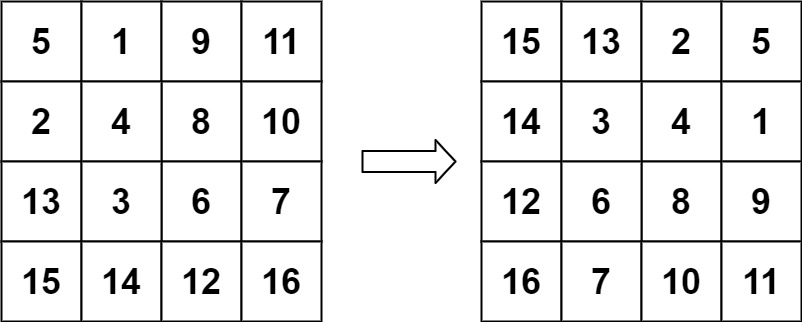

48. 旋转图像
顺时针 90° = 沿主对角线转置 + 每行左右反转；两轮循环都在原地交换，不开新矩阵。
思路
- 第一步转置：
j从i + 1走到n，(i,j)与(j,i)互换，主对角线上的格子不用动。 - 第二步每行左右反转：
j只走到n / 2，(i,j)与(i,n-1-j)互换，首尾对称交换。 - 两步各用一轮双层循环、一个临时变量，完全原地，空间
O(1)；n为奇数时中心格两步都不用动。
图解
最优解
1class Solution {2 public void rotate(int[][] matrix) {3 // 顺时针 90° = 先转置，再每行左右反转4 transpose(matrix);5 // 每行左右反转6 flipRows(matrix);7 }8 9 // 沿主对角线转置：(i,j) 与 (j,i) 互换10 private void transpose(int[][] m) {11 int n = m.length;12 for (int i = 0; i < n; i++) {13 for (int j = i + 1; j < n; j++) {14 int t = m[i][j];15 m[i][j] = m[j][i];16 m[j][i] = t;17 }18 }19 }20 21 // 每行左右反转：(i,j) 与 (i,n-1-j) 互换22 private void flipRows(int[][] m) {23 int n = m.length;24 for (int i = 0; i < n; i++) {25 for (int j = 0; j < n / 2; j++) {26 int t = m[i][j];27 m[i][j] = m[i][n - 1 - j];28 m[i][n - 1 - j] = t;29 }30 }31 }32}题目
给定一个 n × n 的二维矩阵 matrix 表示一个图像。请你将图像顺时针旋转 90 度。
你必须在 原地 旋转图像，这意味着你需要直接修改输入的二维矩阵。请不要 使用另一个矩阵来旋转图像。
示例 1：

输入：matrix = [[1,2,3],[4,5,6],[7,8,9]] 输出：[[7,4,1],[8,5,2],[9,6,3]]
示例 2：

输入：matrix = [[5,1,9,11],[2,4,8,10],[13,3,6,7],[15,14,12,16]] 输出：[[15,13,2,5],[14,3,4,1],[12,6,8,9],[16,7,10,11]]
提示：
n == matrix.length == matrix[i].length1 <= n <= 20-1000 <= matrix[i][j] <= 1000
题面取自力扣当前版本。
数据快照 2026-11-04。题面版权归力扣所有，本站点仅供本人学习使用，请勿对外发布。